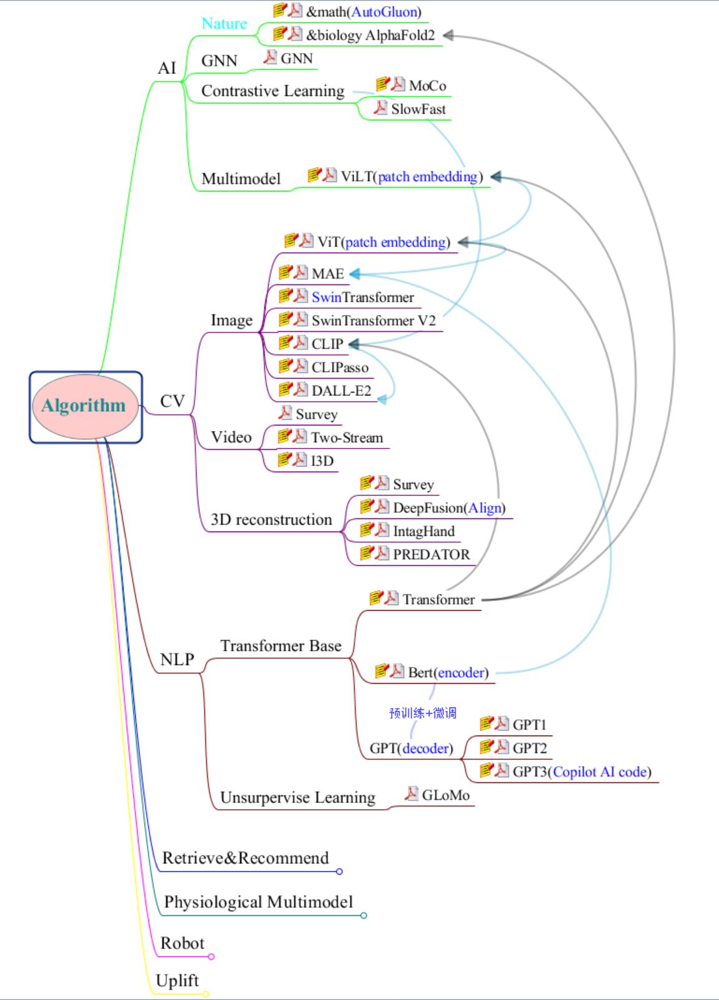
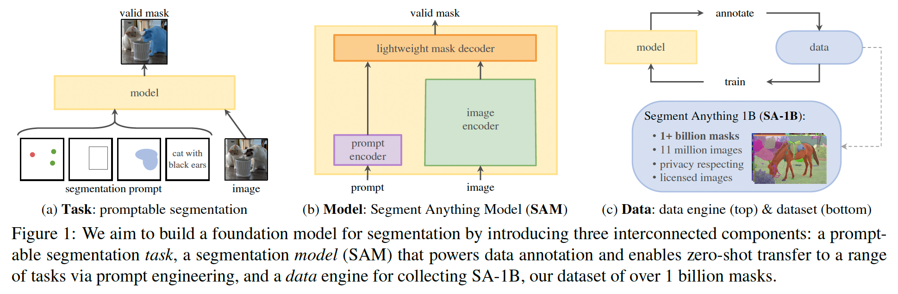
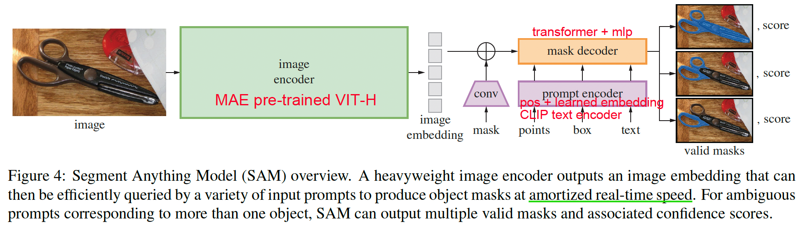
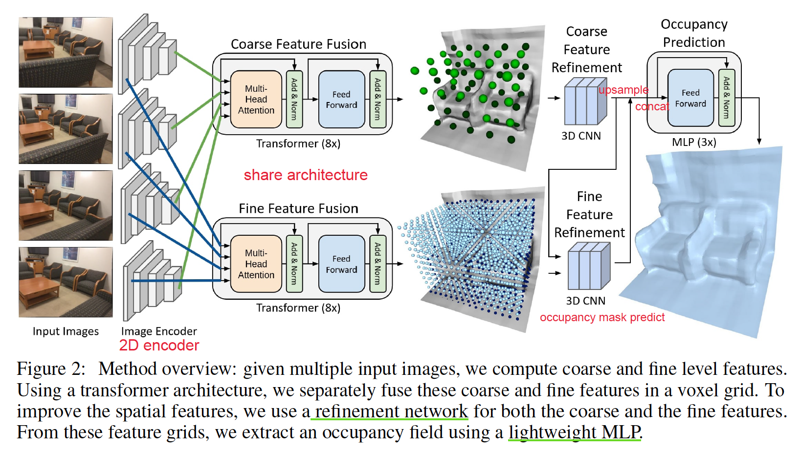
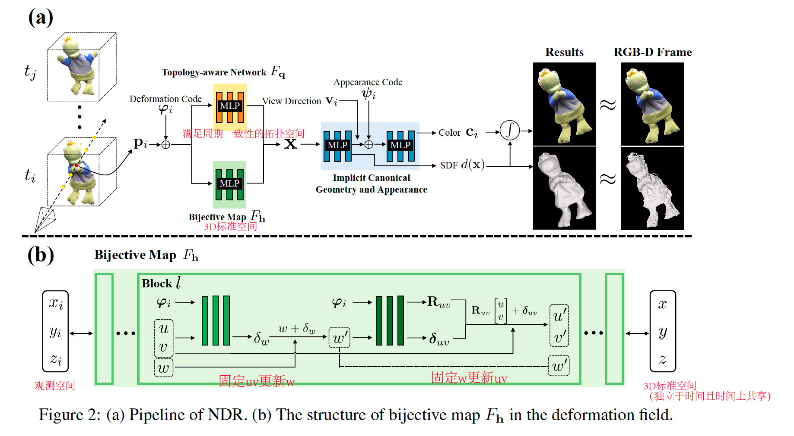
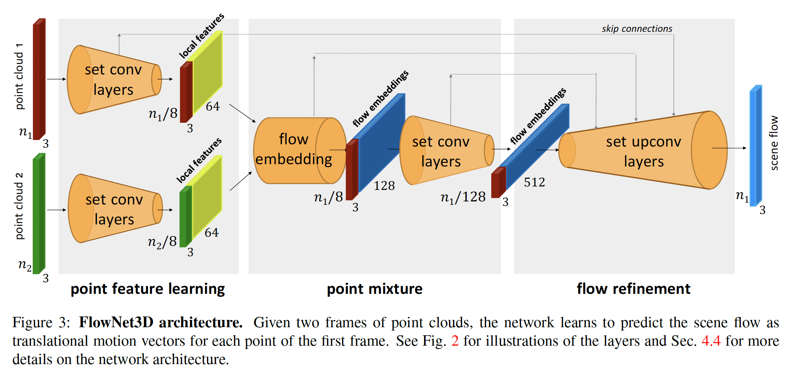
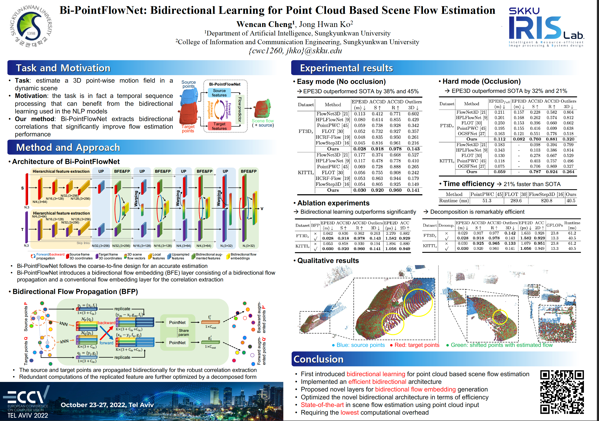

Papers Reading about CV
阅读大纲

| Filed | Paper | Date |
|---|---|---|
| CV: Image | VTs-Drloc | 22-11-24 |
| SPT_LSA_ViT | 22-11-25 | |
| SAM | 23-11-17 | |
| CV: 3D Construction | TransformerFusion | 22-11-08 |
| Neural Deformation Graphs | 22-11-09 | |
| Optimize Non-Rigid Tracking | 22-11-10 | |
| Neural-DynamicReconstruction (NDR) | 23-02-14 | |
| FlowNet3D | 23-03-09 | |
| Bi-PointFlowNet | 23-03-21 |
CV
Image
Efficient Training of Visual Transformers with Small-Size Datasets
- 【NeurlIPS2021】 ArXiv Code
- 简介：使用小数据集优化训练Visual Transformer，训练加速，泛化能力增强。
- 关键技术：
- 验证实验SOTA VTs(CvT、Swin、T2T)在小数据集上效果不好
- VT由于缺少卷积归纳偏置，设计自监督代理任务，从图片中提取额外的信息学习空间关联，增加dense relative localization loss($L_{drloc}$)，即插即用。
- Limitation：fine-grained嵌入网格效果不好

Vision Transformer for Small-Size Datasets
- 【2021】 ArXiv Code
- 简介：使用SPT+LSA解决由于Vision Transformer缺少局部归纳偏置不能在小数据集上训练的问题
- 关键技术：
- Shifted Patch Tokenization：利用邻接像素空间关系，扩大感受野
- Locality Self-Attention Mechanism：使用Diagonal Masking增加不同token之间的注意力分数 + 通过Learnable Temperature Scaling控制输出分布的平滑度

Segment Anything
- 【2023】 ArXiv Code
- 简介：使用三个组件建立图像分割的foundation model，解决一系列下游分割问题，可zero-shot生成
- 关键技术：
- promptable分割任务：使用prompt engineering，prompt不确定时输出多目标mask
- 分割模型：image encoder + prompt encoder -> mask decoder
- 数据驱动：SA-1B（1B masks from 11M imgs）手工标注->半自动->全自动
- Limitation：存在不连贯不精细的mask结果；交互式实时mask生成但是img encoder耗时；text-to-mask任务效果不鲁棒


3D Construction
TransformerFusion: Monocular RGB Scene Reconstruction using Transformers
- 【NeurlIPS2021】 ArXiv Code
- 简介：Transformer在单RGB Video室内场景三维重建中的应用
- 关键技术：
- Coarse-to-fine融合：coarse重建全局场景，fine只重建接近表面处的精细特征，最后将特征融合解码为更高分辨率场景。
- 多视图特征融合：每次最多使用K张图片训练，加载超过K张图片时去除attention权值最小的图片，一直保持使用K张图片；
- Limitation: 遮挡、不完全场景、透明物体重建鲁棒性差。未来研究方向可以使用自监督损失，通过稀疏卷积和局部几何先验获得更高分辨率的几何保真。

Neural Deformation Graphs for Globally-consistent Non-rigid Reconstruction
- 【CVPR2021】Paper Code
- 简介：使用GNN进行非刚性4D重建
- 关键技术：
- 全局+局部优化，损失分别计算；全局优化所有帧变形图，局部多MLP表示框
- 使用单帧图像多视图一致+变形表面一致来计算循迹和变形
- Limitation: 输入特定为64^3的SDF网格；纹理特征不鲁棒；未来可开展稀疏3D卷积和其他特征如颜色重建损失计算工作。

Learning to Optimize Non-Rigid Tracking
- 【CVPR2020】ArXiv
- 简介：RGBD非刚性循迹图网络的收敛优化
- 关键技术：
- 使用CNN端到端学习深度特征匹配，使得高斯牛顿求解器可以解决大非刚性变形场景
- ConditionNet预处理求解器，增加PCG求解速度
- Limitation：3D场景遮挡问题建议直接从3D数据中提取特征；场景流真实数据难获取，建议在合成数据集上学习
- Trick：数据增强；深度图滤波预处理

Neural Surface Reconstruction of Dynamic Scenes with Monocular RGB-D Camera
- 【NeurlIPS Workshop 2021】ArXiv Code
- 简介：用单RGBD图像对动态场景进行神经表面重建
- 关键技术：
- NDR通过无模板先验的隐式形变场恢复运动信息并将观测帧的采样点变换到基准空间，
再通过基准空间中的符号距离场和神经辐射场分别恢复几何与颜色信息。 - 为了保证运动信息的周期一致性，在形变场中设计了一个符合非刚性运动的双射模块；
引入拓扑感知网络解决动态场景中常见的拓扑变化问题
- NDR通过无模板先验的隐式形变场恢复运动信息并将观测帧的采样点变换到基准空间，
- Limitation：输入是大而快的动作时重建效果不好，很难获得合理的相机位姿作为初始化；建模效率不高

FlowNet3D: Learning Scene Flow in 3D Point Clouds
- 【CVPR2019】ArXiv Code
- 简介：通过深度混合架构直接对点云进行端到端的场景流估计
- 关键技术：
- 提出一种端到端的估计连续点云对的场景流方法，做了充分的对比实验、消融、可视化、应用分析验证方法的优越性。
- 模型中的flow embedding层学习两片点云的相关特征，set upconv层学习点云到点云的传播特征。（这俩层结构差不多但输入不同学习的特征不同）
- 思考：模型是UNet架构和PointNet++的abstraction layer的合体，并没有特别的创新。论文好在模型应用迁移、实验充分和会讲故事，尤其是场景流的meta-architecture总结的很好。

Bi-PointFlowNet: Bidirectional Learning for Point Cloud Based Scene Flow Estimation

All articles in this blog are licensed under CC BY-NC-SA 4.0 unless stating additionally.
Related Articles


Comment